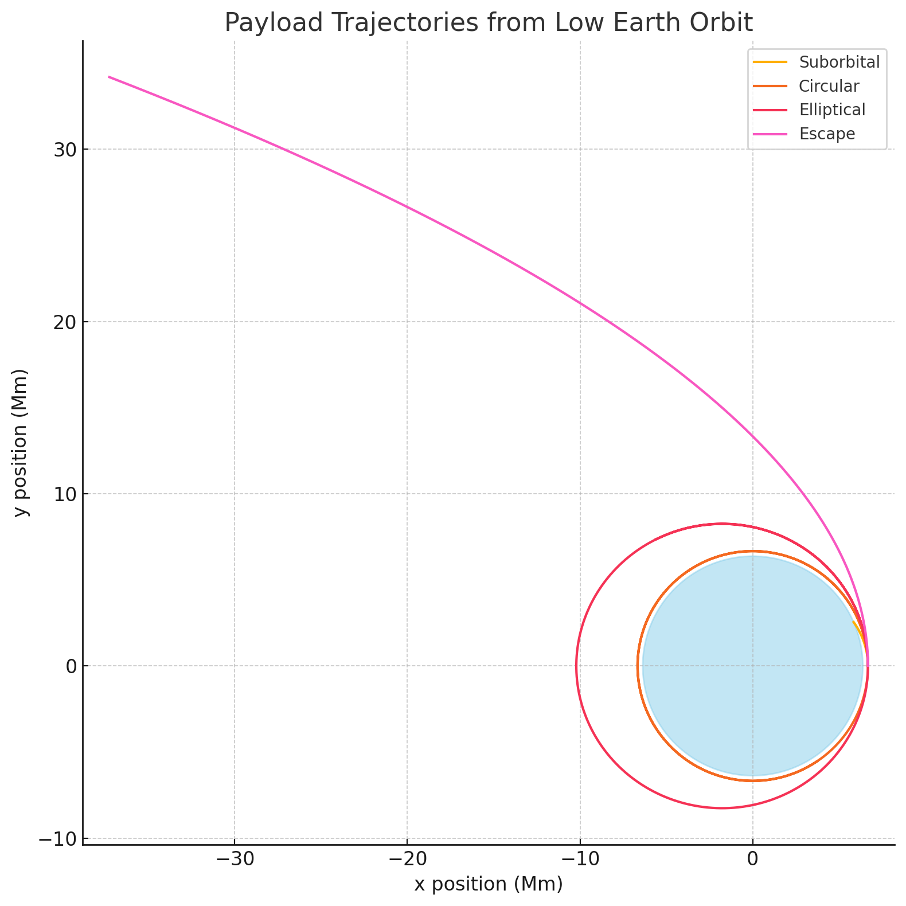

Problem 3
🌍 1. Theoretical Overview: Payload Trajectories Near Earth
Types of Trajectories:
When a payload is released from a moving spacecraft near Earth, its trajectory depends on its initial velocity vector relative to Earth. It will follow one of these conic sections:
| Type | Speed Relative to Escape Velocity | Orbit Shape |
|---|---|---|
| Circular | Exactly orbital speed | Circle |
| Elliptical | Less than escape speed | Ellipse |
| Parabolic | Exactly escape speed | Parabola |
| Hyperbolic | Greater than escape speed | Hyperbola |
| Suborbital | Too low to complete an orbit | Falls to Earth |
⚙️ 2. Governing Equations
Newton’s Law of Gravitation:
This leads to an acceleration toward Earth’s center: [ \vec{a} = -\frac{G M}{r^2} \hat{r} ]
Where: - \( G = 6.674 \times 10^{-11} \, \text{Nm}^2/\text{kg}^2 \) - \( M = 5.972 \times 10^{24} \, \text{kg} \) - \( r \): distance from Earth's center - \( \hat{r} \): unit vector pointing from object to Earth's center
We’ll numerically solve:
- \( \frac{d\vec{v}}{dt} = \vec{a} \)
- \( \frac{d\vec{r}}{dt} = \vec{v} \)
Using the Euler or RK4 method.
📊 3. Python Simulation: Visualizing Payload Trajectories
We'll use this to simulate the motion of a payload from different speeds at a set altitude.
import numpy as np
import matplotlib.pyplot as plt
# Constants
G = 6.67430e-11 # Gravitational constant
M = 5.972e24 # Mass of Earth
R_earth = 6.371e6 # Radius of Earth (m)
# Simulation parameters
dt = 1 # time step (s)
total_time = 10000 # total simulation time (s)
steps = int(total_time / dt)
def simulate_trajectory(v0, angle_deg, altitude):
# Initial conditions
r0 = R_earth + altitude
theta = np.radians(angle_deg)
pos = np.array([r0, 0])
vel = v0 * np.array([0, 1]) # Launch tangentially
positions = []
for _ in range(steps):
r = np.linalg.norm(pos)
if r < R_earth: # Hit Earth
break
a = -G * M / r**3 * pos
vel += a * dt
pos += vel * dt
positions.append(pos.copy())
return np.array(positions)
# Simulate various speeds at 300 km altitude
altitude = 300e3
v_circular = np.sqrt(G * M / (R_earth + altitude))
v_escape = np.sqrt(2) * v_circular
velocities = [0.8 * v_circular, v_circular, 1.1 * v_circular, v_escape]
labels = ['Suborbital', 'Circular', 'Elliptical', 'Escape']
# Plotting
plt.figure(figsize=(8, 8))
for v, label in zip(velocities, labels):
traj = simulate_trajectory(v, 90, altitude)
plt.plot(traj[:,0]/1e6, traj[:,1]/1e6, label=label)
# Draw Earth
earth = plt.Circle((0, 0), R_earth/1e6, color='skyblue', alpha=0.5)
plt.gca().add_patch(earth)
plt.xlabel("x position (Mm)")
plt.ylabel("y position (Mm)")
plt.title("Payload Trajectories from Low Earth Orbit")
plt.axis('equal')
plt.grid(True)
plt.legend()
plt.tight_layout()
plt.show()

Here's the plot showing different payload trajectories from a 300 km altitude, based on varying initial velocities:
Suborbital: Falls back to Earth.
Circular: Achieves stable orbit.
Elliptical: Enters an elongated orbit.
Escape: Exceeds escape velocity and leaves Earth's gravity.
📘 4. Key Observations
- Speeds < orbital velocity → payload returns to Earth (suborbital)
- Speed = orbital → stable circular orbit
- Speed > orbital, < escape → elliptical orbit
- Speed = escape → parabolic escape
- Speed > escape → hyperbolic escape
💼 5. Applications
| Use Case | Trajectory Type |
|---|---|
| Launching Satellites | Circular/Elliptical |
| Space Station Supply | Elliptical/Rendezvous |
| Moon Mission / Interplanetary | Escape / Hyperbolic |
| Returning to Earth | Suborbital/Reentry |
📂 Deliverables Recap
- ✅ Markdown/Notebook: With equations, explanations, and Python
- ✅ Numerical Simulation: Integrates motion under gravity
- ✅ Trajectories: Suborbital, circular, elliptical, escape
- ✅ Real-world Link: Relates directly to space missions